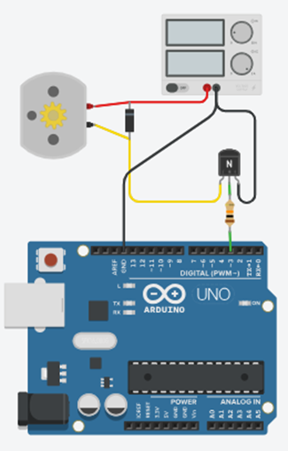

Een DC motor trekt meer stroom dan een pin van je Arduino mag leveren. Dat probleem en zijn oplossing ken je al uit Vermogen schakelen in labo 1, waar je met een transistor een groep leds schakelde. Hier is de stroom een stuk groter, en komt er één component bij.
Een NPN-transistor heeft drie aansluitingen. Stuur je een kleine stroom in de basis, dan laat hij een veel grotere stroom door tussen collector en emitter. Bij een motor gaan ze hierheen:
| Aansluiting | Waar ze naartoe gaat |
|---|---|
| B (basis) | Via een weerstand naar de uitgangspin van de Arduino |
| C (collector) | Naar de motor |
| E (emitter) | Naar GND |
De motor hangt dus boven de transistor: van de plus van de voeding naar de collector. De transistor zit tussen de motor en de massa en laat de stroom er al dan niet door. In TinkerCAD is de 2N2222 gemodelleerd, en die gebruiken we hier.

Kijk op het schema hierboven naar het component dat over de motor heen staat, met de streep naar de plus. Dat is een diode.
Een motor is een spoel. Zolang er stroom door loopt zit er energie in het magnetisch veld, en een spoel laat zijn stroom niet zomaar ophouden. Schakelt de transistor uit, dan probeert de spoel die stroom te blijven duwen. Er is geen weg meer, dus de spanning over de spoel loopt op tot ze er wel een vindt, dwars door je transistor heen. Die spanningspiek is een veelvoud van je voedingsspanning en maakt een transistor stuk in een enkele schakeling.
De diode geeft die stroom een uitweg. In normale werking staat ze in sperrichting en doet ze niets. Op het moment dat je uitschakelt, staat ze in geleiding en laat ze de spoelstroom rondlopen tot de energie op is. Vandaar de naam vrijloopdiode.
Dit geldt bij elke spoel die je schakelt: een motor, een relais, een elektromagneet. De diode staat omgekeerd over de spoel, dus met de streep aan de kant van de plus. Zet je ze per ongeluk andersom, dan sluit je je voeding kort.
In TinkerCAD kan je de diode weglaten en werkt alles door. Op een echt breadboard is dat het verschil tussen een schakeling die blijft werken en een transistor die na een minuut warm en dood is.
De weerstand tussen je pin en de basis reken je uit zoals in labo 1, met dezelfde twee formules en dezelfde marge op de hFE. Waar die formules vandaan komen en waarom je door 5 deelt, staat op Vermogen schakelen.
Alleen de collectorstroom is anders. Voor de motor van 80 mA uit De DC motor, met Vcc = 5 V, Vbe = 0,7 V en een hFE van 200 die we tot 40 herleiden:
Die waarde bestaat niet als standaardweerstand, dus je neemt de dichtstbijzijnde die je hebt liggen: 2,2 kΩ. Vbe en hFE zoek je op in de datasheet van de transistor.
Met deze schakeling kan je de motor aan- en uitzetten, en met analogWrite() op de basis ook zijn snelheid regelen. Wat je er niet mee kan, is de motor de andere kant op laten draaien, want daarvoor zou je de twee draden van plaats moeten wisselen en één transistor doet dat niet. Daar heb je een H-brug voor nodig.